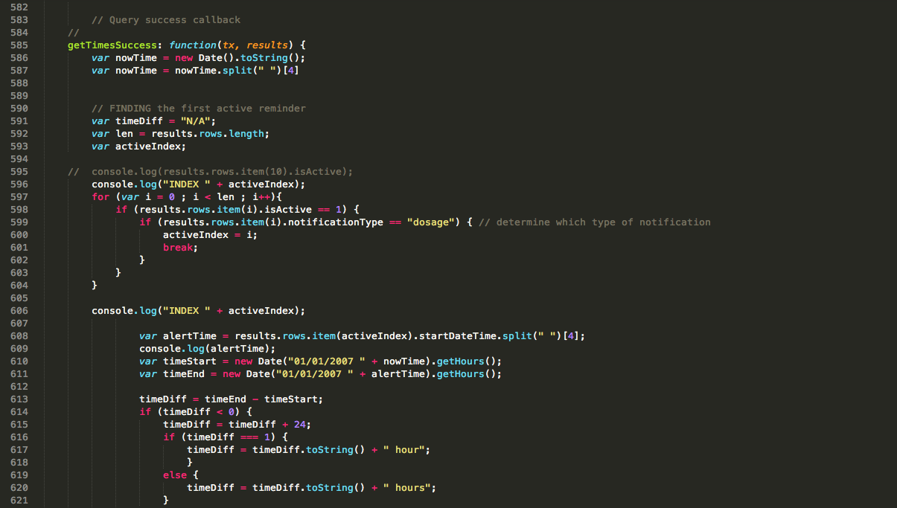
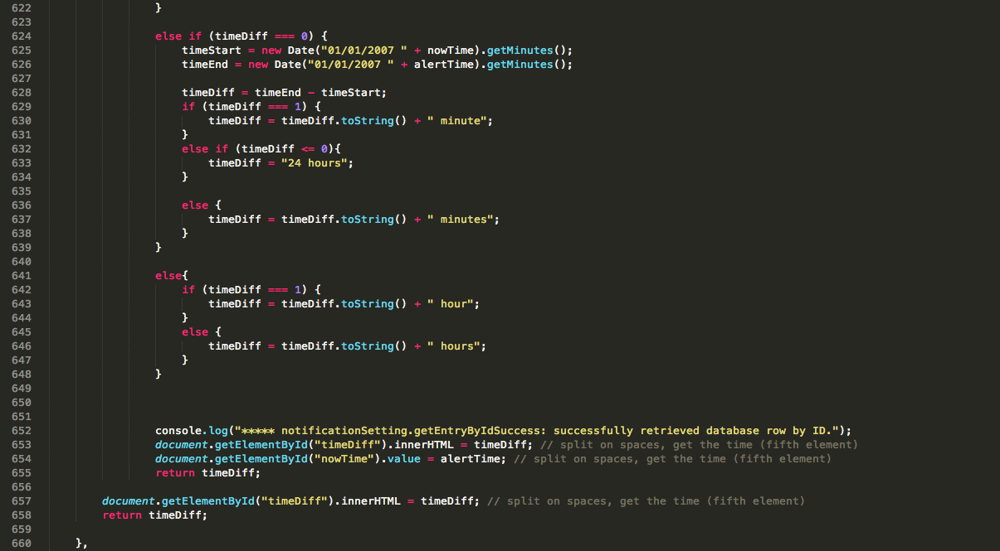

My 10 Week Journal
Includes successes, frustrations and summaries
Week 1
This week began kind of slowly, which was expected. Throughout the week, I attended a few meetings so that I could meet the whole team and understand what everyone is working on. I was assigned my project but I didn't have very much information on it until the end of the week. I used a majority of the time refreshing myself on HTML and learning new points within the language.
The only frustrating part of the week was that I did not have very much to do. I expect the next week to be far more interesting.
Week 2
Since I received information about my main project at the end of last week, I was able to begin the actual coding of the basic foundation of the site. I have mostly been coding in HTML. A few difficulties I have been having is entirely comprehending how experiments will be done. I need to know this because the site will be used to test for a different field than the one I understand most. I have to be very flexible to adapt my mindset so that I can help create a very versitile and straight-forward site. Learning HTML did not take very long. The syntax is very simple and if I do have questions, Google or w3schools.com usually has the answers. At the end of this week, I have completed the flow of a very basic looking, but usable, website. It is very clear and the next step is to make sure that I have created what the users desired and to connect what I have created to a database and actual functions, which my partner, Jonathan, is developing.
Week 3
On Thursday, during the second week, I had a meeting with a woman named Jessica Day and she critiqued the foundation of an interface I created. She told me what changes should be made and she also clarified different concepts that I did not completely understand while making the basic interface. This week, I added the changes she requested. I found that the most frustrating part of this project is having to plant myself in a Concept Formation Scientist's shoes so that I could create the most navigatable and usable interface that I can. I met with her again on Thursday of this week and she critiqued the interface again. On the last day of the week, I fixed a large portion of the interface. Currently, Jonathan and I have developed an interface that allows experimenters to sign into the site, manage experiments for people who are researching Concept Formation.
Week 4
This week, Jonathan and I have combined our halves of the Caldwell Concept Formation Lab interface. We now have a running database and website url that contains the actual experiment-hosting interface. Not everything is complete but a large portion is. Users can now create experiments with actual stimuli that they can upload through the interface. Next week we plan on completing the portion of the interface that allows the user to run actual experiments on participants. A few frustrations I had this week were that the first three days of the week were all that Jonathan and I had to complete that first large portion so that we could provide some kind of demonstration to Ms. Jessica Day. On Wednesday, at 1:00pm, Ms. Jessica Day critiqued our work, once again, and she praised what we have accomplished. This was a really exciting feeling. She told us that she would like to have a more finished product to share with her co-workers and peers so that she can rally their feedback to us. Though the beginning of the week was a little stressful, the outcome was really satisfying.
Week 5
This week I began creating a tutorial section of the "Run Experiment" interface. I actually found my own stimuli that would be suitable for participants to practice the kinds of questions they will be asked during the experiment. This will be placed at the beginning of every created experiment. During a meeting, my mentor, Prof. Gabriela Marcu, suggested that instead of having Jessie ( Jessica Day) rally feedback from her co-workers to us about our interface, we should sit down with her co-workers, one at a time, and observe how they interact with it so that we understand more clearly how they will be using the interface and where confusion may lie. This process is called Usability Testing. I also taken on another project. I'm going to help further develop an app called Positively Smart. The project is to redesign and add features to this app. The purpose of Positively Smart is to help adolescence who are HIV positive maintain their medication usage and provide them with easy contact with a support group. I plan on helping develop a feature for the app to do those things, and to make it look more aesthetically pleasing.
Week 6
At the beginning of this week, Jonathan and I receieved some training and tips on Usability Testing so that we could gain the most feedback out of observing someone run through our interface system. The next day, we met with Carol, who also does Concept Formation research at Caldwell University. We presented her with the task of creating an experiment with our system. She had her own stimuli and data to put into her experiment. She went through the Usability Testing very well and gave us great feedback. We now know how to improve the 'Create an Experiment' portion of our interface. This meeting meant a lot to me; during the Usability Testing, Carol praised us by saying that creating an experiment, which she did in front of us within an hour, would take over fifteen hours with their old system.
On Wednesday, I was given documentation on what my role in the Positively Smart project would be. I needed to make sure that all of the features within the already-existing app worked, and if they didnt, I would have to make them work. Later that day, there was a meeting about how to improve Positively Smart. Tony and Nistha are other fellow interns that are helping to develop the app further. They presented their mockups on the new-and-improved app they envision. The meeting was very productive and many ideas were placed on the table. The meeting for me was a little stressful because I knew that I would have to take on how to create all of these new features that people were presenting and I felt really unsure if I could do it.
At the end of the meeting, I mentioned my feelings to my mentor and she ensured me that since the Children's Hospital of Philadelphia (CHOP) is only giving us a month to complete what they want us to complete, providing a solid-looking app with one or two new features would be enough. Upon hearing this, I felt ultimate relief.
I now know that I have to:
- Replace the app's appearance with a more intuitive and efficient
one
- Make a 'Create an Avatar' feature for the app
- Make sure everything is fully functional at the beginning of August
Thursday was just spent installing all of the development tools required to work on the app. It literally took all day. It was so frustrating.
Friday was far more exciting because I began to code some of the changes made to the app! I'm mostly coding in HTML so it's like a slightly more complicated version of what I was doing for the Concept Formation project.
Week 7
This week I updated the appearance of the app currently named Positively Smart. Its functionality has not changed but it looks significantly better than when it originally did. Wednesday, Jonathan and I have signed an Invention Disclosure form for the Caldwell Concept Formation Lab interface. It is a system that has never been developed before and can really benefit researchers who do concept formation projects. On Thursday, I attended a meeting with the Children's Hospital of Philadelphia (CHOP) and Tony and Nishtha presented their mock-ups so that the design of Positively Smart can continue improving. The meeting also discussed further development within Positively Smart's functionality. At this meeting, I was assigned to improve the current Calendar feature within the app, create an avatar feature for the users, and to make the app more asthetically pleasing. This week mostly consisted of coding. Overall, it was a pretty calm week.
Week 8
This week I had to decipher the code already written, specifically the database-related code. It was fairly difficult to understand how everything worked since a large portion of the code was written by someone else. I figured out how the code worked and I wrote a timer function that calculated the time remaining before the user's next medication dose. Below are the functions I wrote for the medication countdown timer.
 The part of the function that counts down the hours/minutes was not hard to write; the challenges and frustrations arised from figuring out how to access necessary information to correctly count down to the time of the alert. This was finished mid-way through the week. Afterwards, I worked on creating a calendar that will mark when medication dosages are taken. The database does not connect the date at which medication dosages were taken, but it does store whether or not they were taken. This raised a few issues. I cannot quite find where the data is stored, so it will be difficult to connect when the dosage was taken and if it was taken or not. Creating a new ID for the date at which the medication was taken will be my next step, but I am stumbling here a little. Monday I plan on traveling to Caldwell University in New Jersey to do more User Testing on Concept Formation Analysts to see how the other project I am working on can be improved.
Week 9
On Monday, Jonathan and I drove up to Caldwell University to perform more usability testing on current researchers and received more feedback on how to further improve the interface. They described the interface as "very intuitive" and have began asking for additional features that will allow the system to be more versatile. I think that it is a great sign that the interface can easily incorporate these new features. Some of these features include:
- Allowing for a different type of trial that hides its sample after it is clicked so that the participant has to remember what the question originally was when selecting the correct answer from the comparisons.
- Gradually decreasing in feedback before reaching a block that has no feed back so that participants dont feel so intimidated by a sudden lack in feedback.
On Tuesday, I began working on the avatar creation interface portion of the app. Our developer, Tony, provided me with the individual, customizable pieces of an avatar, which include different colors and styles of hair, eyes, skin and shirts. Next week I will finish the database used to store the user's custom avatar.
I have also began creating my poster for OurCs. I discussed poster design with Tony so that I could provide a profecional and aesthetically pleasing poster for the future convention.
Week 10
This week was all about tying up loose ends. I worked with Jonathan to complete the database for the avatar customization interface. A few frustrations I had this week was that I felt more pressed on time than usual. I felt like I had to complete more than I did, but since this project isn't due until around September, I think the amount of work I have contributed was decent. Jonathan will take over the further development of the app.
This week I also worked on more drafts of my poster for a conference, OurCS at Carnegie Mellon University, in October. Below is one of the drafts.